Module 1: Bayesian Knowledge Tracing
BKT-BF walkthrough Windows
Introduction
This guide seeks to help beginners with Java Environment Setup, JetBrain IntelliJ IDEA installation, and test Bayesian Knowledge Tracing Brute Force model fitting code(BFK-BF) Baker et al. (2010).
This BKT-BF walkthrough guide is based on Windows 11. It should be similar on Windows 10 or earlier versions. Only the user interface might look different.
Section 1: Java IDE and Environment Setup
Application for JetBrain Educational License
If you haven’t applied for an educational license for JetBrain, please follow the instructions below to do so. If you have your own preferences about Java IDEs, please move on to the next step.
Having an educational licenses allows you to use all the Pro version of JetBrains IDEs(e.g. PyCharm(Python), WebStorm(HTML), PhPStorm(PHP), IntelliJ IDEA(Java) etc.).
Apply for an educational license for JetBrain via this website: https://www.jetbrains.com/community/education/#students Usually, you need to have a .edu email address to apply.
Scroll down, Click “Apply now”
Usually, we apply with a University email address, but feel free to apply with other methods if you have one.
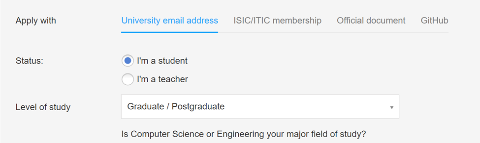
Please follow the instructions in the verification email to activate your account.
Installing Jetbrain IntelliJ IDEA
1. Go to https://www.jetbrains.com/idea/download/?section=windows
2. Click download (If educational license is not available for you, please scroll down to download the community edition)
3. Run the .exe file to install the IntelliJ IDEA
4. Please check following setups
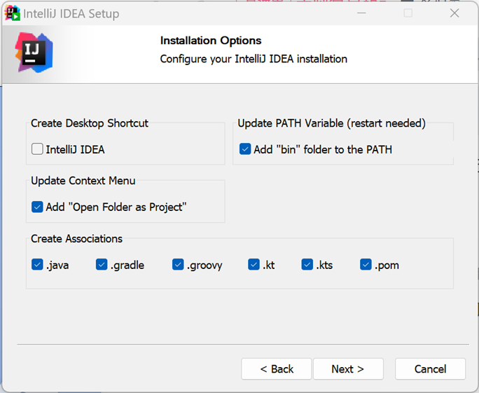
Then click next and install it. After that, please select “I will manually reboot later”.
Install Java Environment
Go to:https://www.oracle.com/java/technologies/downloads/#java21
Please go to JDK21, then click Windows, download the x64 Installer
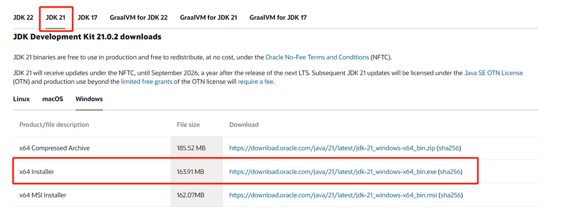
Install it, When asked to select a destination folder. I suggest you should go to another disk(rather than C), and create a new folder called “JDK21” or like “JDK-21”. You may use the Create New Folder button below to create a new folder. Thus, my Java path here would be E:
Then Click “OK” and next all the way to the end
After installation, Go to File Explorer
Right click on the “This PC” on the left, then click “Properties” . You might need to scroll down a little bit to see “This PC”
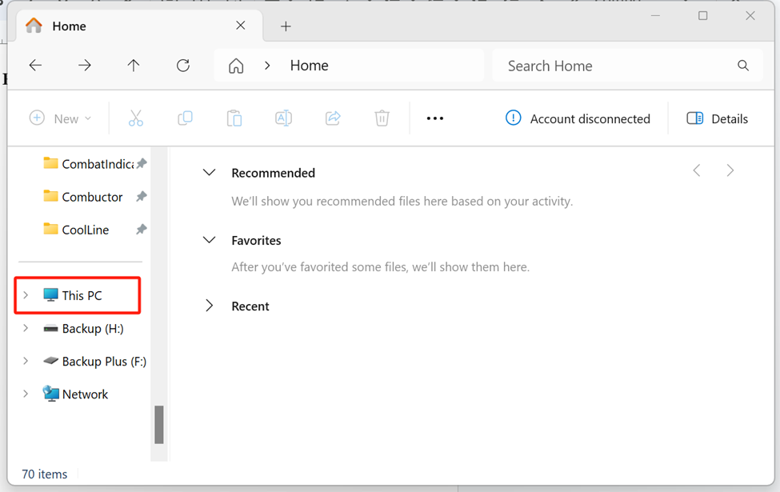
11. Then click “Advanced system settings”. Then please click Environment Variables under Advanced tab
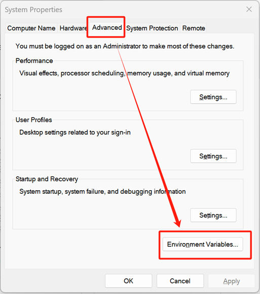
12. You will see the IntelliJ IDEA variable here, then click New
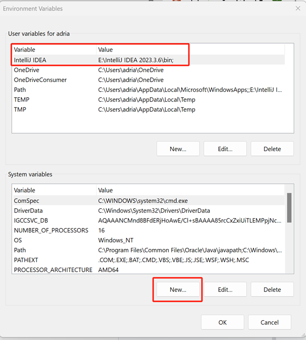
13. We will create a new Variable called “JAVA_HOME”. Variable value should be the path in Step 3. Please see below:
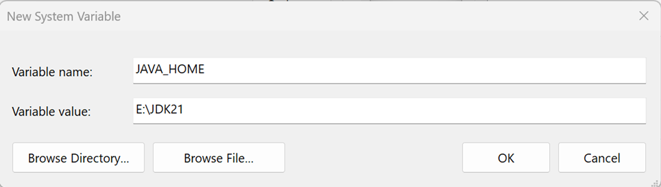
After that, please click OK.
14. Then, please go to System Variables, find a variable called “Path”. Double-click it.
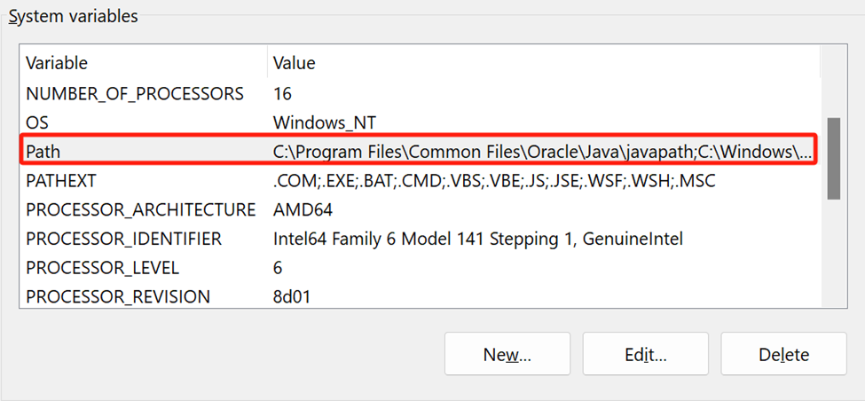
15. You will see this window. Click new, then enter %JAVA_HOME%Then click OK. You might need to wait for a minute before trying the following steps.
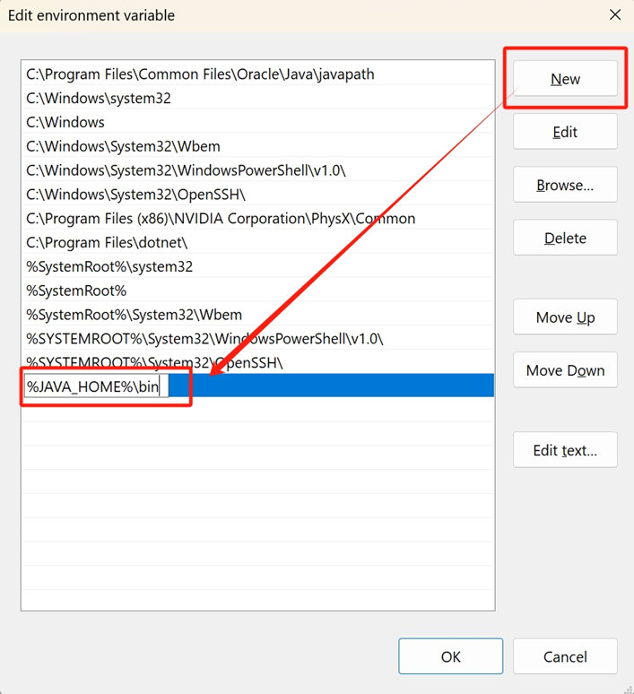
16. Now Let’s test if we installed it successfully. Press WIN+R. You will see “Run”, enter cmd. Then click OK
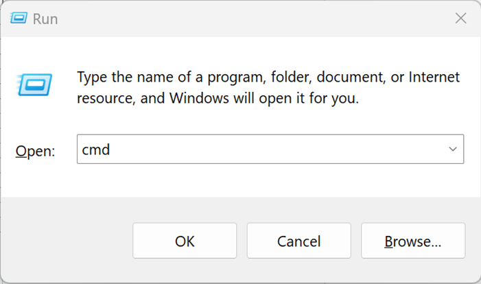
17. Now we come to this command line page. Enter java -version. Then press enter
You should see below, then reboot manually..
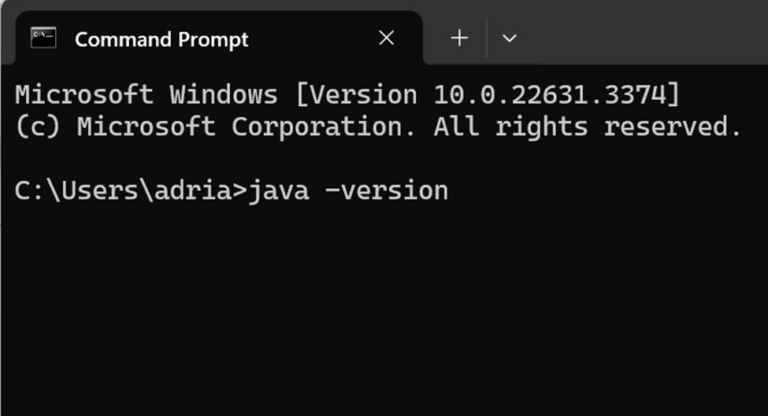
18. Now let’s open IntelliJ IDEA. For the first time you open it, you may need to agree to the terms of service and then decide whether or not they would like to share their data. If you have registered an educational account, Please click Activate IntelliJ IDEA
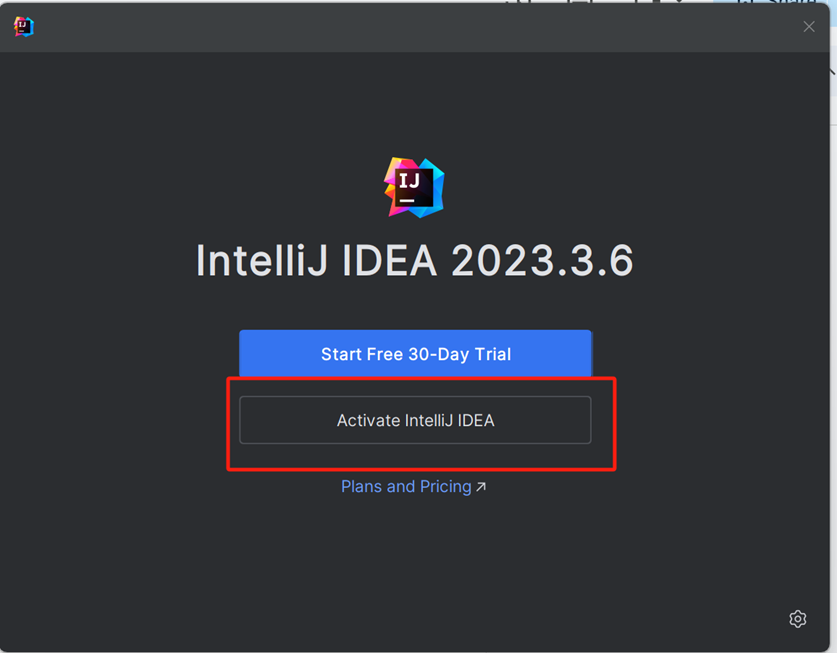
Then click “Log In to JetBrains Account”, it will redirect you to a webpage. Log in with your account.
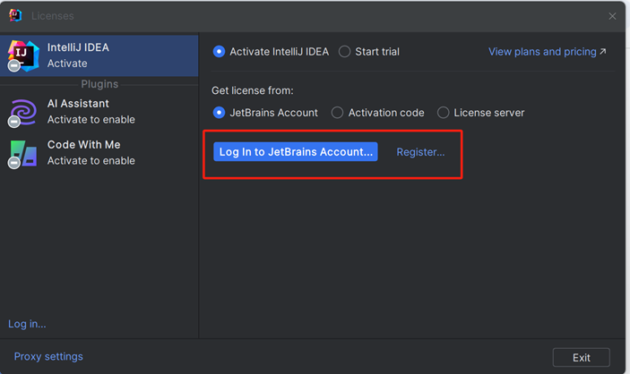
Your first Java Project 1. Now Let’s try create your first Java project, click New Project
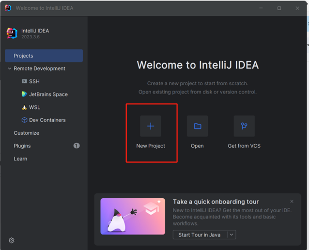
Then, change the name of your project, Check Add sample code(No need for future projects, just for beginners’ testing).
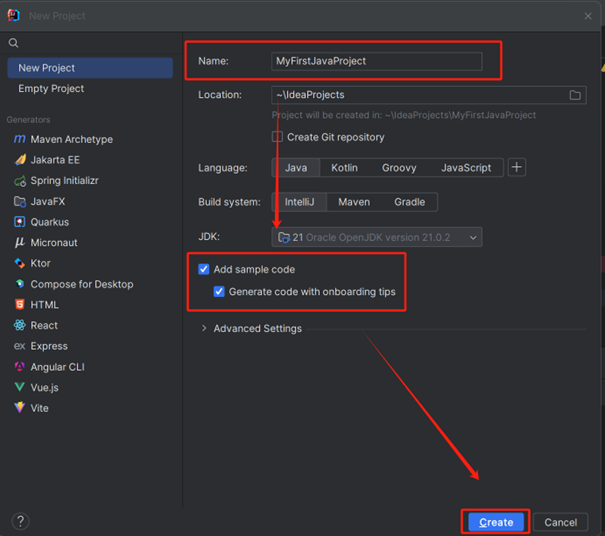
2. You might see some notifications on the button left, like below:
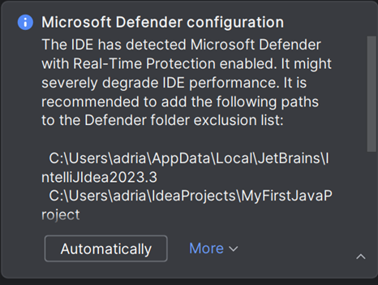
Simply click Automatically, you will be good! Then Let’s run the sample code using the Run button(See below)
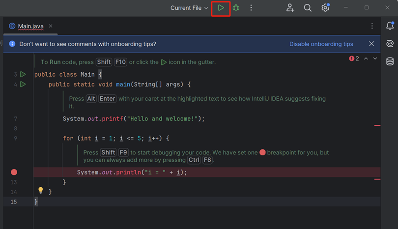
3. In Output section, you should see
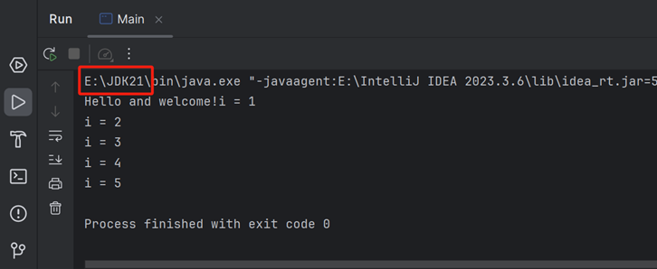
The highlighted part is the path you set in Step 3
Congratulations! You just made a huge step towards Java programming!
Section 2: BKT-BF
We successfully installed the Java environment and IDEA.
Now we come to the actual BKT-BF code Baker et al. (2010).
Please download the BKT-BF with this link: https://learninganalytics.upenn.edu/ryanbaker/BKT-BruteForce.zip
For copyright statement, please refer to https://learninganalytics.upenn.edu/ryanbaker/edmtools.html
Fitting with BKT-BF
1. Extract BKT-BruteForce.zip
2. Copy computeKTparamsAll.java, right click on the src folder, then click Paste, then click OK
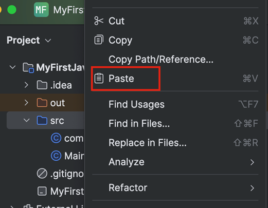
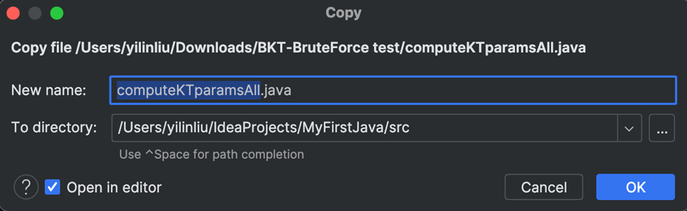
Similarly, copy TestData.txt, and paste to the root directory. Mine’s name is MyFirstJava
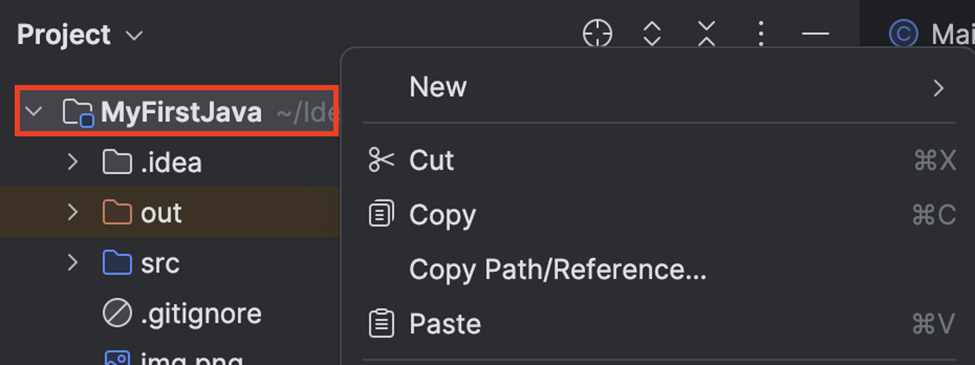
Now you may run the BKT-BF file, click Run, you should see:
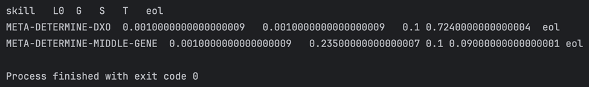
This output means: The best parameters for Skill META-DETERMINE-DXO are: L0 = 0.001, G=0.001, S=0.1 T=0.724 The best parameters for Skill META-DETERMINE-MIDDLE-GENE are: L0 = 0.001 G=0.235 S=0.1 T=0.09
- Now you successfully ran the BKF-BF fitting method, If you have any data of your own, you can fit your BKT model to your own data! Just match the format in File. (TestData.txt)